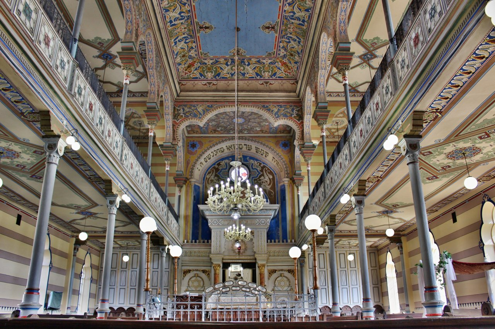

Ortodoxná synagóga
Ortodoxná synagóga je ústrednou budovou vo vzácnom komplexe rituálnych stavieb prešovskej ortodoxnej židovskej obce. Objekt postavila v rokoch 1897 – 1898 košická stavebná firma Kollacsek & Wirth. V deväťdesiatych rokoch 20. storočia prešla synagóga generálnou rekonštrukciou a dodnes slúži ako miesto židovských bohoslužieb.
Zároveň sa na hornom poschodí nachádza zbierka judaík Židovského múzea
FOTO — nahraďte vlastnou fotografiou
Sefardská synagóga
FOTO — nahraďte vlastnou fotografiou
V areáli je taktiež umiestnená Klaus-synagóga sefardská.
Židovská škola
FOTO — nahraďte vlastnou fotografiou
V minulosti bola budova školy centrom vzdelávania pe deti zo židovskej komunity.